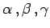
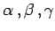

Inhalt Index DeskTop Bronstein

 Geometrie Sphärische Trigonometrie Haupteigenschaften sphärischer Dreiecke Weitere Formeln
Geometrie Sphärische Trigonometrie Haupteigenschaften sphärischer Dreiecke Weitere Formeln


Die Berechnung der Fläche eines sphärischen Dreiecks kann mit Hilfe des Exzesses  erfolgen. Dieser kann gemäß (3.190a) aus den bekannten Winkeln  berechnet werden oder, wenn die drei Seiten a,b,c bekannt sind, gemäß (3.197a) bis (3.197e) über die berechenbaren Winkel. Die L'HUILIERsche Gleichung ermöglicht jedoch die unmittelbare Berechnung von
erfolgen. Dieser kann gemäß (3.190a) aus den bekannten Winkeln  berechnet werden oder, wenn die drei Seiten a,b,c bekannt sind, gemäß (3.197a) bis (3.197e) über die berechenbaren Winkel. Die L'HUILIERsche Gleichung ermöglicht jedoch die unmittelbare Berechnung von  aus den Seiten:
aus den Seiten:
Diese Gleichung entspricht der HERONischen Flächenformel der ebenen Trigonometrie.